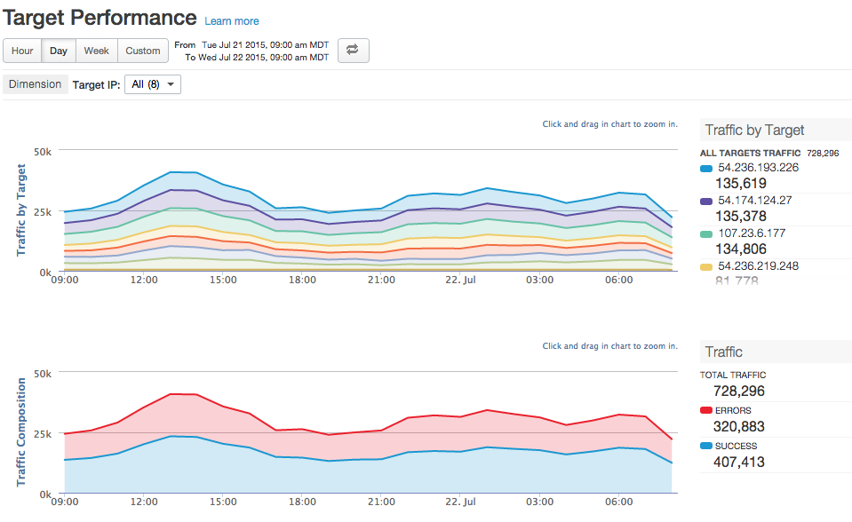

[toc]
The Target Performance dashboard helps you visualize traffic patterns and performance metrics for API proxy backend targets.
The Target Performance dashboard

| Metric | Description |
| All Targets Traffic | Measures the total amount of traffic that passes from Apigee Edge to all backend targets. |
| <Target name> |
Measures the total amount of traffic that passes from Apigee Edge to the specified backend target. |
| Metric | Description |
| Total Traffic | Measures the total amount of traffic that passes from Apigee Edge to all backend targets. Same as All Targets Traffic. |
| Errors | The total number of requests to backend targets that resulted in an unsuccessful response. Error responses do not count. |
| Success | The total number of all requests to backend targets that are successful (that do not return an error). |
See also this interesting article on the Apigee Community site: When can the Average Total Response Time be less than the Average Target Response Time?
| Metric | Description |
| Average Time |
The average of the Total Response Time measured for all API calls made to an Apigee Edge organization environment. The Total Response Time is the amount of time it takes for an API call to Edge to return (in milliseconds). Or, put another way, total response time is the time measured from when an entire API call is received on Apigee Edge to the time Edge begins sending a response back to the client app. |
| Average Target Time |
The average number of milliseconds that it takes from the point the last byte of a request is sent from Apigee Edge to a backend target to the time Edge receives the last byte of the response. It's basically measuring how much time the API call spends on the target system. |
| Average Proxy Time |
This value is calculated as the Total Response Time minus the Target Response Time. It's basically a measure of how much time the API call spends flowing through Apigee Edge itself (in milliseconds). |
| Metric | Description |
| Total Errors | Measures the total number of errors sent from backend targets to Apigee Edge. |
| 3XX Errors | Measures the total number of HTTP 3XX sent from backend targets to Apigee Edge. |
| 4XX Errors | Measures the total number of HTTP 4XX errors sent from backend targets to Apigee Edge. |
| 5XX Errors | Measures the total number of HTTP 5XX sent from backend targets to Apigee Edge. |
| Metric | Description |
| Total Payload Size | The total payload size for all requests and responses between Apigee Edge and backend targets. |
| Request Payload Size | The total payload size for all requests sent from Apigee Edge to backend targets. |
| Response Payload Size | The total payload size for all responses sent from backend targets to Apigee Edge. |
You can view metrics for all proxies or drill into specific proxies using the Target IP dimension dropdown menu at the top of the dashboard.
This dashboard uses standard controls, like the date and data aggregation selectors, hovering over graphs for more context, exporting data to CSV, and so on. To learn more, see http://docs.apigee.com/node/15971.